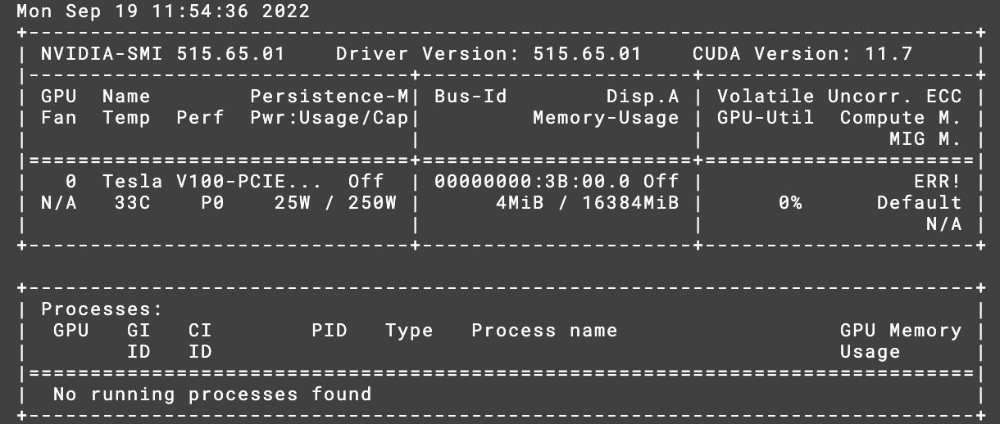

Samuel Jankovych
Sunday, September 18, 2022
Setup MFF UK GPULab
Prerequisites
- Get a CAS login.
- Login to gpulab using CAS login, follow this guide.
- Write to admin (jakub.yaghob@mff.cuni.cz) to get access to docker.
Docker to Charliecloud
- Access docker with
salloc -C docker - Pull CUDA from docker hub
sudo docker pull nvidia/cuda:11.7.1-devel-ubuntu22.04 - Now we need to convert the docker image to charliecloud image.
You can try to run the following code:
If you get an error (in my case it was due to my id being out of range), you need to start a docker container from the image,
ch-convert -i docker nvidia/cuda:11.7.1-devel-ubuntu22.04 cudathen save the container as a tar file.sudo docker run --rm -d -it --name cuda nvidia/cuda:11.7.1-devel-ubuntu22.04 bashThen you can convert the tar file to a charliecloud image.sudo docker export cuda > cuda.tar.gzStop the container.ch-convert cuda.tar.gz cudaYou can verify deletion of the container withsudo docker stop cudasudo docker ps -a - Convert the image to folder strucutre.
ch-convert cuda ./cuda
CUDA
- To upload CUDA libraries, first exit the
dw[01-05]nodethen upload the CUDA libs from node with GPUusername@dw[01-05]:~$ exitYou can verify the upload withsrun -p gpu-ffa --gpus=1 ch-fromhost --nvidia ./cudaYou should see something like this: srun -p gpu-ffa --gpus=1 ch-run cuda nvidia-smi
cuDNN
- To use the cuDNN library, you need to register on the NVIDIA Developer Program. Then you can download the cuDNN library from here. Find the version of cuDNN that matches your CUDA version and container OS. If you are using the same container tag, as shown above download
Local Installer for Ubuntu22.04 x86_64 (Deb)forCUDA 11.X. Afterwards upload the file to GPULab usingscpscp cudnn-local-repo-ubuntu2204-8.5.0.96_1.0-1_amd64.deb username@gpulab:~/ - Extract the cuDNN library in the Charliecloud image
srun -p gpu-ffa --gpus=1 ch-run -w -u 0 -g 0 -c /home/username ./cuda -- dpkg -i cudnn-local-repo-ubuntu2204-8.5.0.96_1.0-1_amd64.deb - Install the cuDNN library:
- import key
srun -p gpu-ffa --gpus=1 ch-run -w -u 0 -g 0 -c /home/username ./cuda -- cp /var/cudnn-local-repo-ubuntu2204-8.5.0.96/cudnn-local-7ED72349-keyring.gpg /usr/share/keyrings/ - refresh repo metadata
srun -p gpu-ffa --gpus=1 ch-run -w -u 0 -g 0 -c /home/username ./cuda -- apt-get update - install cuDNN
You might need to press enter to confirm the installation, even if not prompted yet.
srun -p gpu-ffa --gpus=1 ch-run -w -u 0 -g 0 -c /home/username ./cuda -- apt-get install libcudnn8=8.5.0.96-1+cuda11.7
- import key
If needed, you can follow the official guide for more details, but remeber to use the prefix srun -p gpu-ffa --gpus=1 ch-run -w -u 0 -g 0 -c /home/username ./cuda -- and run without sudo.
The prefix explains the following:
srun -p gpu-ffa --gpus=1- run on node with GPUch-run -w -u 0 -g 0 -c /home/username ./cuda- run as root user (-u 0 -g 0) in the container in./cudawith working directory/home/usernameand write access to the container (-w).- after
--the command to run in the container.
Python
- Install python3.10
Again you might need to press enter to confirm the installation, even if not prompted yet.
srun -p gpu-ffa --gpus=1 ch-run -w -u 0 -g 0 -c /home/username ./cuda -- apt-get install python3 - Install pip
Again you might need to press enter to confirm the installation, even if not prompted yet.
srun -p gpu-ffa --gpus=1 ch-run -w -u 0 -g 0 -c /home/username ./cuda -- apt-get install python3-pip - Verify the installation
You should see something like this:
srun -p gpu-ffa --gpus=1 ch-run -w -c /home/username ./cuda -- python3 --versionPython 3.10.4
Tensorflow
- Install tensorflow
srun -p gpu-ffa --gpus=1 ch-run -w -c /home/username ./cuda -- pip3 install tensorflow - Verify the installation
You should see something like this:
srun -p gpu-ffa --gpus=1 ch-run -w -c /home/username ./cuda -- python3 -c "import tensorflow as tf; print(tf.reduce_sum(tf.random.normal([1000, 1000])))"tf.Tensor(0.0, shape=(), dtype=float32) - Verify GPU support
You should see something like this:
srun -p gpu-ffa --gpus=1 ch-run -w -c /home/username ./cuda -- python3 -c "import tensorflow as tf; print(tf.config.list_physical_devices('GPU'))"[PhysicalDevice(name='/physical_device:GPU:0', device_type='GPU')]
Notes
Include this lines in __init__.py file of tensorflow if you autocompletion and syntax highlighting in your IDE
```python
# Explicitly import lazy-loaded modules to support autocompletion.
# pylint: disable=g-import-not-at-top
if _typing.TYPE_CHECKING:
from tensorflow_estimator.python.estimator.api._v2 import estimator as estimator
from keras.api._v2 import keras
from keras.api._v2.keras import losses
from keras.api._v2.keras import metrics
from keras.api._v2.keras import optimizers
from keras.api._v2.keras import initializers
# pylint: enable=g-import-not-at-top
```